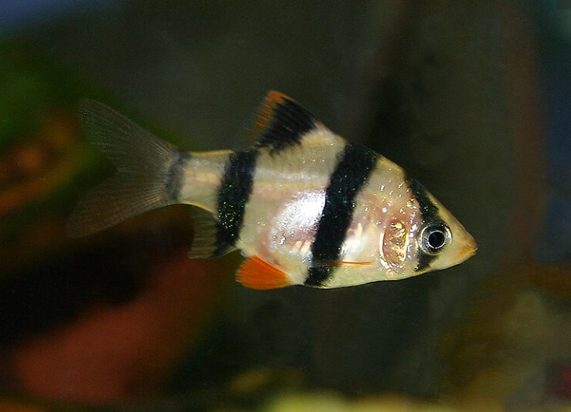
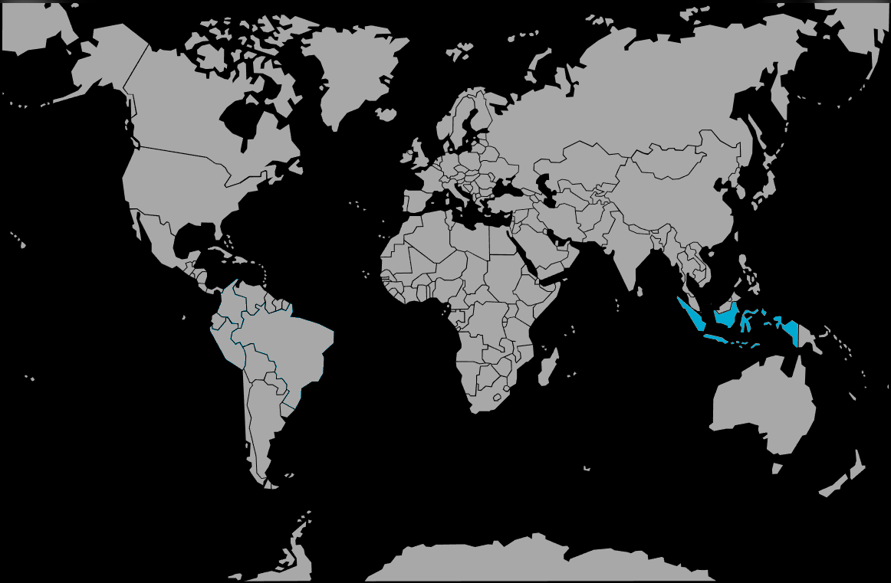

Systématique
- Ordre : Cypriniformes
- Famille : Cyprinidae
- Genre : Puntigrus
- Espèce : P. tetrazona
- Syn. : Puntius tetrazona, Barbus tetrazona
- Groupe : Barbus

Puntigrus tetrazona, universellement connu sous le nom de Barbus de Sumatra ou Tétrazona, est l'un des poissons d'aquarium les plus populaires. Reclassé dans le genre Puntigrus en 2013, il se distingue par son corps haut, comprimé latéralement et ses quatre bandes verticales noires caractéristiques sur un fond jaune orangé à doré.
C'est un poisson actif et robuste, atteignant généralement 5 à 7 cm. Il existe de nombreuses variétés d'élevage (vert mousse, albinos, etc.), mais la forme sauvage reste la plus emblématique.
C'est une espèce magnifique mais qui possède une réputation sulfureuse en bac communautaire en raison de sa tendance à mordiller les nageoires.
C'est un poisson grégaire très vif qui établit une hiérarchie de groupe complexe. Il doit impérativement être maintenu en banc d'au moins 10 individus.
S'il est maintenu en nombre insuffisant (moins de 6-8), il s'ennuie et devient agressif envers les autres habitants, pratiquant la "ptérygiophagie" (morsure des nageoires). Il harcèle alors les poissons lents ou à voiles (Scalaires, Guppys, Gouramis, Bettas).
En revanche, dans un grand groupe, ils passent leur temps à se pourchasser et à parader entre eux, laissant généralement les autres espèces tranquilles. C'est un nageur infatigable qui occupe tout l'espace de nage.
Mode : ovipare.
C'est un diffuseur d'œufs. Le couple fraie généralement le matin parmi les plantes fines. La femelle expulse les œufs qui sont immédiatement fécondés par le mâle. Les œufs sont adhésifs.
Il n'y a pas de soins parentaux ; au contraire, les adultes sont de grands mangeurs d'œufs et doivent être retirés juste après la ponte pour espérer voir des alevins.
Dimorphisme sexuel : Le mâle est plus svelte, plus coloré, avec un nez souvent rouge vif et des nageoires (dorsale et pelviennes) bordées de rouge intense. La femelle est plus ronde, plus grande au niveau de l'abdomen, et ses couleurs sont légèrement plus ternes.
Espérance de vie : Environ 5 à 7 ans en captivité.
Il est originaire des îles de Sumatra et de Bornéo (Indonésie). Il fréquente les eaux calmes ou à courant modéré des rivières forestières, ainsi que les marécages tourbeux. L'eau y est souvent claire ou légèrement teintée, avec un substrat de sable et de feuilles mortes.
Répartition

Origine naturelle :
- Indonésie : Sumatra et Bornéo (Kalimantan).
- Souvent confondu avec Puntigrus anchisporus (Bornéo).
Paramètres de maintenance
Température : 20 à 26 °C (préfère une eau pas trop chaude).
pH : 6,0 à 7,5.
GH : 5 à 15 °dGH.
Courant : Modéré, apprécie une bonne oxygénation.
Volume conseillé : Bien que de taille moyenne, c'est un nageur très actif. Un minimum de 100 à 120 L avec une façade d'au moins 80 cm à 100 cm est nécessaire pour un banc. Il ne convient pas aux petits volumes.
Régime alimentaire
Régime : omnivore vorace.
Dans la nature, il consomme des vers, des crustacés et des matières végétales.
En aquarium, il mange tout avec frénésie. Il est important de lui fournir une part végétale (granulés à la spiruline, légumes pochés) en plus des proies carnées (vers de vase, artémias) pour éviter l'embonpoint et maintenir sa santé.